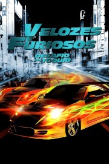
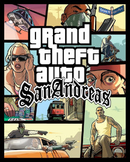
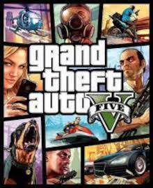

Filmes

Nada de Novo no Front
O adolescente Paul é convocado para atuar na linha de frente da Primeira Guerra Mundial. O jovem começa seu serviço militar de forma idealista e entusiasmada, mas logo é confrontado pela dura realidade do combate.

Projeto Almanaque
Um grupo de jovens acaba descobrindo instruções secretas para montar uma máquina do tempo, e decidem construir o aparelho. No entanto, os efeitos são muito diferentes do que esperavam.
Harry Potter e as Relíquias da Morte - Parte 2
A batalha entre as forças do bem e do mal da magia alcançam o mundo dos trouxas. O risco nunca foi tão grande, e ninguém está seguro. Harry Potter precisa fazer um sacrifício final conforme o confronto com Lord Voldemort se aproxima
Velozes e Furiosos - Desafio em Tóquio
Sean Boswell é um piloto de rua que desafia seu rival e bate o carro no fim da corrida. Ele decide se mudar para o Japão para evitar a prisão nos Estados Unidos, já que os rachas não são nada populares com as autoridades. Em Tóquio, ele começa a aprender um excitante e perigoso estilo novo de competir nas ruas. Só que os riscos ficam ainda mais altos quando Sean decide rivalizar com o campeão local e acaba se apaixonando pela namorada dele.
Nasce uma Estrela
Jackson Maine é um cantor no auge da fama. Um dia, após deixar uma apresentação, ele para em um bar para beber. Lá, Jackson conhece Ally, uma insegura cantora que ganha a vida trabalhando em um restaurante. Ele se encanta por ela e seu talento. Mais tarde, os dois acabam se casando. Ao mesmo tempo em que Ally desponta para o estrelato, Jackson vive uma crise pessoal e profissional devido aos problemas com o álcool. Os momentos opostos acabam por minar o relacionamento amoroso do casal.
Séries
Breaking Bad
O professor de química Walter White não acredita que sua vida possa piorar ainda mais. Quando descobre que tem câncer terminal, Walter decide arriscar tudo para ganhar dinheiro enquanto pode, transformando sua van em um laboratório de metanfetamina.

How I Met Your Mother
Ted se apaixonou. Tudo começou quando seu melhor amigo, Marshall, soltou a bomba de que planejava pedir em casamento a namorada de longa data, Lily, uma professora de jardim de infância. Ted percebeu que era melhor se mexer se esperava encontrar o verdadeiro amor. Para ajudá-lo na missão está Barney, um amigo com opiniões sem fim -- e às vezes absurdas --, uma queda por ternos e uma fórmula infalível para conhecer garotas. Quando Ted conhece Robin, tem certeza que é amor à primeira vista, mas o relacionamento esfria e se transforma em uma amizade.

The 100
Quase 100 anos após um apocalipse nuclear devastar a Terra, 100 sobreviventes de uma estação espacial voltam para avaliar as condições do planeta.

Sherlock
Sherlock Holmes sempre foi um homem moderno, o mundo é que envelheceu. Agora ele está de volta como sempre foi: nervoso, contemporâneo, difícil e perigoso, apresentado de um jeito novo, moderno.
Stranger Things
Um grupo de amigos se envolve em uma série de eventos sobrenaturais na pacata cidade de Hawkins. Eles enfrentam criaturas monstruosas, agências secretas do governo e se aventuram em dimensões paralelas.
Livros
Um estudo em vermelho
"Um estudo em vermelho", publicado em 1887, é a primeira obra da série escrita por Arthur Conan Doyle. Um romance de mistério muito intrigante em que o autor apresenta seus novos personagens, Holmes e seu amigo e cronista, Dr. John Watson.
O signo dos quatro
"O signo dos quatro" é o segundo romance protagonizado por Holmes e seu parceiro de investigações Dr. Watson. Uma história intrincada que se inicia com o aparecimento de uma jovem muito elegante e agradável e que vive uma tragédia familiar. Este fascinante romance, com facetas íntimas dos dois personagens principais, foi um dos responsáveis pela fama da maior dupla de detetives da literatura mundial.

Harry Potter e a Pedra Filosofal
Até os dez anos, o magricela e desengonçado Harry Potter era maltratado pelos tios Dursley, que o criavam. No dia do seu aniversário de onze anos, porém, descobriu que não era um garoto qualquer, e sim um bruxo, símbolo de poder e sabedoria. Precisava, portanto, iniciar com urgência a trajetória no cotidiano da magia e do sobrenatural
Percy Jackson e o Ladrão de raios
Percy Jackson é um semideuses. Ele tem experiências estranhas em que deuses e monstros mitológicos parecem saltar das páginas dos livros de História direto para a sua vida. Pior que isso: algumas dessas criaturas estão bastante irritadas. Um artefato precioso foi roubado do Monte Olimpo e Percy é o principal suspeito. Para restaurar a paz, ele e seus amigos – jovens heróis modernos – terão de fazer mais do que capturar o verdadeiro ladrão: precisam elucidar uma traição mais ameaçadora que fúria dos deuses.
A última Festa
Todo ano, nove amigos comemoram o réveillon juntos. Desta vez, apenas oito vão voltar para a casa depois da festa.Programado para acontecer em um cenário idílico, o réveillon que Miranda, Katie e os outros amigos que conheceram na faculdade passarão juntos este ano promete refeições deliciosas regadas a champanhe, música, jogos e conversas descontraídas
Jogos
Elden Ring
Nas Terras Intermédias, governadas pela Rainha Marika, o Elden Ring, a fonte da Térvore, foi destruído. Os semideuses filhos de Marika reivindicaram os fragmentos conhecidos como Grandes Runas, e essa incrível força recém-descoberta desencadeou uma guerra: a Ruptura. E agora o poder será dado aos Maculados, que foram rejeitados e exilados das Terras Intermédias. Com mortos que ainda vivem e uma graça há muito perdida, siga o caminho para as Terras Intermédias, atravessando o mar nebuloso, para chegar até o Elden Ring e se tornar o Elden Lord.

Red Dead Redemption 2
Estados Unidos, 1899. O fim da era do velho oeste se aproxima, e os xerifes caçam as últimas gangues fora da lei. Quem não se rende ou sucumbe, acaba morto. Depois de tudo dar errado em um roubo na cidade de Blackwater, no faroeste, Arthur Morgan e a gangue Van der Linde são obrigados a fugir.
Grand Theft Auto: San Andreas
Há 5 anos, Carl Johnson fugiu das pressões da vida em Los Santos, San Andreas... uma cidade que se destruía com gangues, drogas e corrupção, onde estrelas de cinema e milionários fazem o melhor que podem para evitar traficantes e bandidos. É o começo dos anos 90. Carl volta para casa. A sua mãe foi assassinada, a sua família ruiu e seus amigos de infância estão todos indo em direção ao desastre. Para piorar tudo, dois policiais corruptos armaram para que ele fosse acusado de homicídio. CJ é forçado a embarcar numa jornada que o levará por todo o estado de San Andreas para salvar sua família e assumir o controle das ruas.

Need for Speed: Underground 2
Seis meses após se tornar o melhor piloto das ruas em Need for Speed: Underground, o jogador é convidado para uma corrida na qual seu carro é totalmente destruído por um Hummer. Algum tempo depois, Rachel, amiga de Samantha, chama o jogador para vir em sua cidade, Bayview, emprestando o seu carro 350z para que o jogador faça uma nova carreira e tente se tornar o melhor piloto do lugar, além de obter uma revanche contra o homem que arrebentou seu carro.
Grand Theft Auto V
O mundo aberto da Rockstar games que gerou sucesso de crítica chega a uma nova geração. Entre nas vidas de três criminosos muito diferentes, Michael, Franklin e Trevor, enquanto eles arriscam tudo em uma série de assaltos ousados que podem garantir o resto de suas vidas.